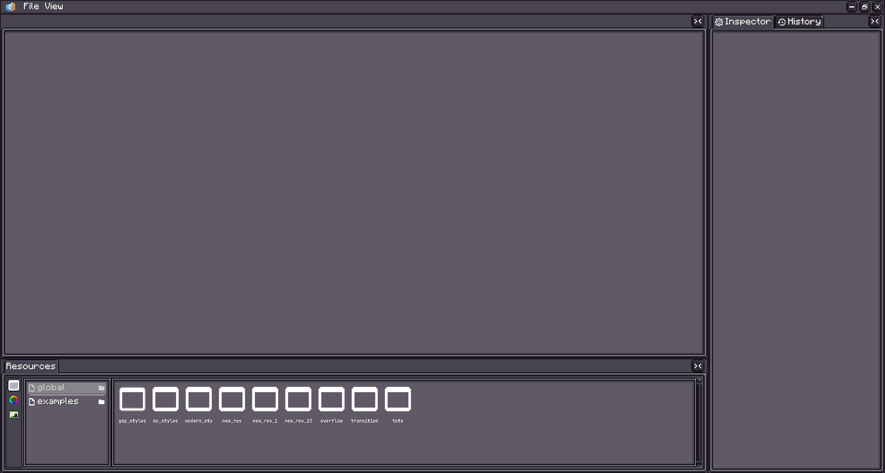
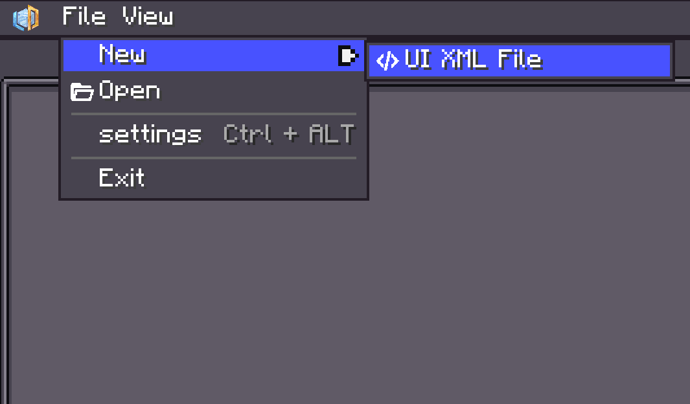
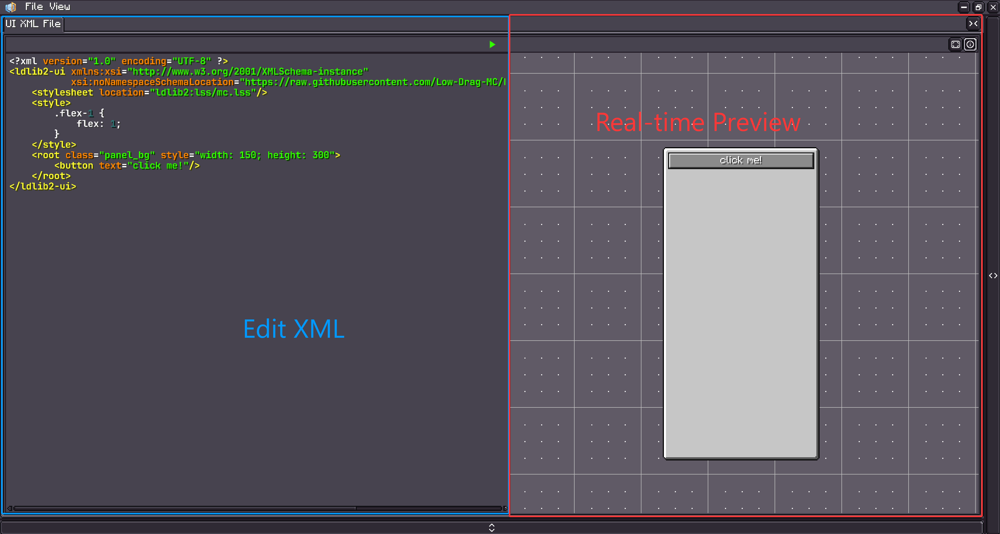
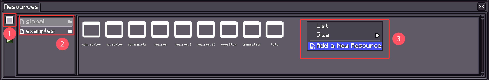
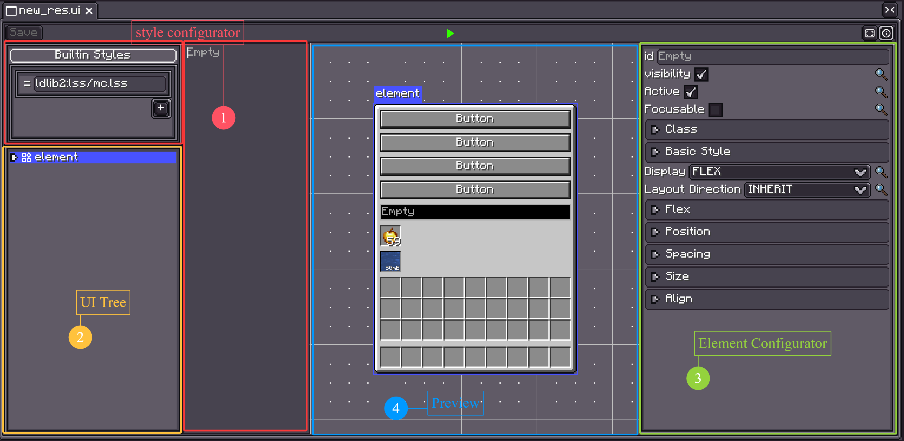
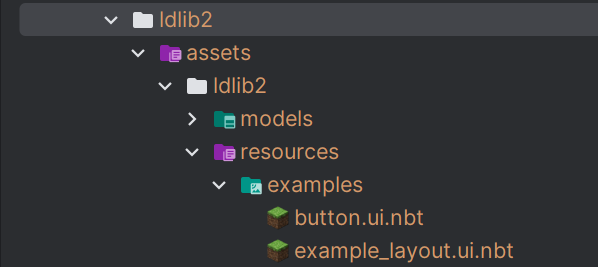
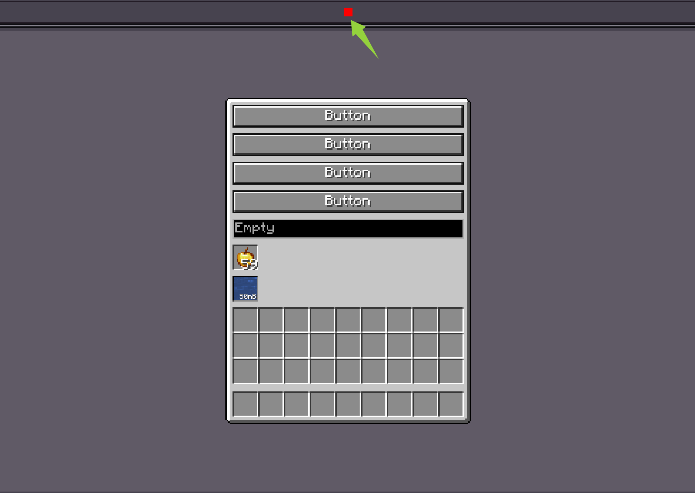

UI 编辑器
Warning
此命令只能在单人游戏世界中使用。
LDLib2 提供了可视化编辑器来支持 UI 创建。使用以下命令打开 UI 编辑器。
{kind=link}

UI 编辑器支持两种可视化创建 UI 的方式：
UI XMLUI Template
UI XML
点击 File → New → UI XML File 创建一个新的 UI XML 文件。
你也可以点击 Open 加载现有的 XML 文件。
{kind=link}

{kind=link}

打开后，你可以编辑 XML 并在编辑器中直接实时预览你的 UI。更多 XML 详情，请查看 UI Xml
Tip
你也可以使用外部 IDE（如 VS Code 或 IntelliJ IDEA）编辑 XML 文件。
当你保存更改时，预览会自动更新。
UI Template
UI Template 与 UI XML 类似，用于定义 UI 内容
（包括样式和组件树）。
主要区别在于：
- UI Template 可以使用 UI 编辑器进行可视化编辑。
- 保存的 UI Template 可以作为模板组件在其他 UI XML 文件或 UI Template 中复用。
与 UI XML 文件不同，UI Template 由 LDLib2 的资源系统管理。
要创建一个，请使用资源面板：
{kind=link}

步骤：
- 选择 UI 资源类别。
- 选择或创建一个资源提供者。
- 右键创建一个 UI Template，然后双击进入编辑模式。
编辑你的 Template
打开 UI Template 后，你将看到以下编辑器界面：
{kind=link}

-
样式配置器
编辑内置样式，添加或移除外部样式表，检查已应用的样式。 -
UI 树
显示完整的 UI 层次结构。
你可以通过右键菜单创建或移除组件，选择多个元素，或拖拽重新排列层次结构。 -
元素配置器
显示当前选中元素的可配置属性。 -
预览
提供 UI 的实时预览。
使用 UI 编辑器，你可以可视化地配置布局、样式和其他设置。
如果你理解了基础部分介绍的概念，编辑器应该很容易上手。
对于具有特殊配置选项的组件，请参阅它们各自的文档页面。
加载 UI Template 并设置
有两种方法可以加载并使用你的模板来构建 UI。
- 你可以将其移动到你的 assets 目录中，并通过
ResourceLocation加载。 - 如果资源在 ldlib2 文件夹下，你可以右键点击资源来获取资源路径并加载它。
{kind=link}

@Override
public ModularUI createUI(Player player) {
var ui = Optional.ofNullable(UIResource.INSTANCE.getResourceInstance()
// resource location based
.getResource(new FilePath(ResourceLoaction.parse("ldlib2:resources/examples/example_layout.ui.nbt"))))
// file based
//.getResource(new FilePath(new File(LDLib2.getAssetsDir(), "ldlib2/resources/examples/example_layout.ui.nbt"))) // LDLib2.getAssetsDir() = ".minecraft/ldlib2/assets"
.map(UITemplate::createUI)
.orElseGet(UI::empty);
// find elemetns and do data bindings or logic setup here
var buttons = ui.select(".button_container > button").toList(); // by selector
var container = ui.selectRegex("container").findFirst().orElseThrow(); // by id regex
return ModularUI.of(ui, player);
}
function createUIFromUIResource(path) {
return UIResource.INSTANCE.getResourceInstance().getResource(path).createUI();
}
function createUI(player) {
// file based
let ui = createUIFromUIResource("file(./ldlib2/assets/ldlib2/resources/global/modern_styles.ui.nbt)")
// resource location based
// let ui = createUIFromUIResource("pack(ldlib2:resources/global/modern_styles.ui.nbt)")
// find elemetns and do data bindings or logic setup here
let buttons = ui.select(".button_container > button").toList(); // by selector
let container = ui.selectRegex("container").findFirst().orElseThrow(); // by id regex
return ModularUI.of(ui, player)
}
加载事件
保存的 UI Template 仅定义视觉结构和样式——默认情况下不包含运行时逻辑。
在大多数情况下，你加载模板后需要在代码中手动附加处理程序或绑定。
然而，如果你想在不同的上下文中复用相同的 UI，每次都重复相同的设置逻辑会变得很繁琐。
为了解决这个问题，LDLib2 提供了一个钩子事件，让你可以在 UI Template 调用 createUI() 时注入逻辑，这样你可以在创建过程中自动配置返回的 UI。
@SubscribeEvent
public static void onUICreated(UITemplate.CreateUI event) {
var template = event.template;
var ui = event.ui;
// do initialization here
}
UI 模拟
点击编辑器顶部的绿色播放按钮进入模拟模式。
这允许你与 UI 交互并验证其行为。
{kind=link}
